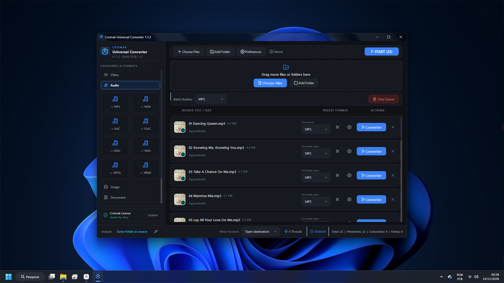
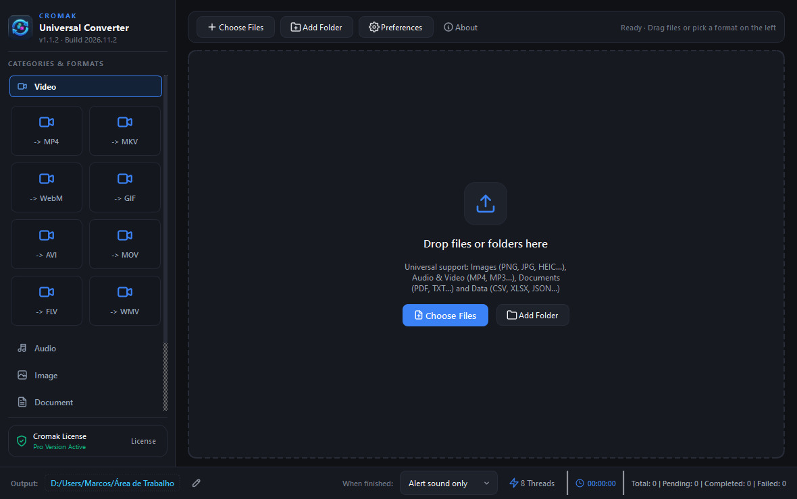
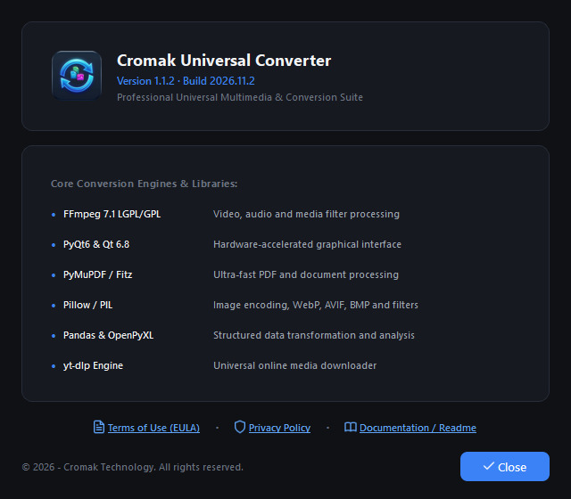

Cromak Universal Converter
One desktop app to convert any format, edit media, and automate batches 100% offline.
Stop uploading confidential files to ad-filled websites with arbitrary size caps. Cromak Universal Converter combines FFmpeg 7.1, PyMuPDF, Pillow, Pandas, and yt-dlp in a modern PyQt6 interface with a multi-threaded batch queue, Media Editor, Screen Recorder, Batch Renamer, and direct integration with CromakZip and WEB To APK Compiler.

Multi-Domain Conversion Without Touching the Cloud
Online converters restrict file sizes, inject watermarks, and expose sensitive company documents on third-party servers. Cromak Universal Converter runs everything locally on your PC, utilizing all available CPU cores to process large queues in seconds.
Switch seamlessly between Video (MP4, MKV, WebM, AVI, MOV, GIF), Audio (MP3, WAV, FLAC, AAC, OGG, OPUS), Images (PNG, JPG, WebP, AVIF, ICO, PDF), Documents (PDF, DOCX, TXT, MD, HTML), and Data (XLSX, CSV, JSON, YAML) in a single workflow.
| Features & Capabilities | Online / Legacy Converters | Cromak Universal Converter v1.1.2 |
|---|---|---|
| Privacy & File Size Limit | Mandatory upload & 100 MB cap | 100% Local Processing · No File Size Limits |
| Format Coverage | Video-only or PDF-only | Video, Audio, Image, Document & Data in one queue |
| Built-in Production Tools | None | Media Editor, Merger, Screen Recorder, Downloader, Frame & Batch |
| Cromak Ecosystem Integration | Isolated | Auto-detects CromakZip.exe & WebToApkCompiler.exe |
| Lifetime License | Recurring monthly subscriptions | US$ 19.90 (20% OFF · Lifetime + 40-day B2B Trial) |
The 4 Suite Pillars
-
Embedded Pro Engines
FFmpeg 7.1 for video and audio, PyMuPDF/Fitz for ultra-fast PDFs, Pillow for WebP/AVIF/ICO, and Pandas + OpenPyXL for spreadsheets and JSON/YAML.
-
Multi-Threaded Smart Queue
Drag entire folders, apply quality/DPI/bitrate presets, track live progress, and configure automatic post-completion actions.
-
Built-in Productivity Utilities
Mini Player, Media Editor, Media Merger, Screen Recorder (F6), Video Downloader (yt-dlp), Batch Renamer, and Frame Exporter with zero extra installs.
-
Native Cromak Ecosystem Link
Automatically detects and launches your installed CromakZip.exe and WebToApkCompiler.exe directly from the utilities sidebar.
Explore Cromak Universal Converter Inside
Real screenshots of version 1.1.2 showcasing the main UI, conversion presets, downloader, preferences, and licensing.

Main Interface & Utilities
Category-organized sidebar (Video, Audio, Image, Document, Data, and Cromak Utilities) with drag-and-drop queue, live status tracking, and thread control.

Conversion Presets & Parameters
Configure output format, quality, video/audio bitrates, resolution, and destination folder before queuing multiple files in parallel.

Universal Downloader (yt-dlp)
Download online video and audio directly from links with format and quality selection, saved straight to your configured folder without third-party websites.

Preferences, Threads & Languages
Customize CPU worker threads, default output folders, recording/screenshot paths, update checks, and instant UI language switching.

Official HWID Licensing & B2B Trial
40-day free trial with non-blocking B2B mode upon expiration and lifetime SHA-512 activation bound to your Machine Code (CMKUC-).

Engine Transparency & Documentation
Clear overview of all embedded engines (FFmpeg, PyQt6, PyMuPDF, Pillow, Pandas, yt-dlp) plus direct offline access to EULA, Privacy Policy, and Manual.
Simple, Fair B2B Licensing
Evaluate every feature for 40 days without lockouts or get your lifetime PRO license at 20% off.
Free B2B Trial (40 Days)
- All features unlocked for 40 days
- Offline batch conversion (FFmpeg, PyMuPDF, Pandas)
- Media Editor, Screen Recorder & Downloader
- Automatic CromakZip & WEB To APK integration
- Non-blocking B2B mode after trial ends
- Displays startup license reminder after 40 days
- Continuous commercial use requires PRO license
PRO Lifetime License
- Perpetual Lifetime License (Pay Once)
- Zero Trial Prompts or Nag Screens
- Commercial, Corporate & Pro Use Included
- All conversion engines with zero restrictions
- Full utility suite (Recorder, Editor, Downloader, Batch)
- Continuous updates across the 1.x series
- Priority technical support via HWID Code
Send your HWID Code (CMKUC-...) to support after purchase
Available in 3 Native Languages
Full UI translation with instant switching inside Preferences.
Frequently Asked Questions (FAQ)
Are my files uploaded to any server during conversion?
No. All video, audio, image, PDF, and spreadsheet processing runs 100% locally on your computer, keeping corporate documents and private media completely confidential.
What happens after the 40-day trial?
Following our B2B model, the software never locks you out: it shows a startup license reminder and lets you keep working normally. Activate a PRO license to remove prompts and unlock continuous commercial use.
How does CromakZip and WEB To APK Compiler integration work?
In the Converter utilities sidebar, the shortcuts automatically detect your installed CromakZip.exe and WebToApkCompiler.exe on Windows and launch them with one click.